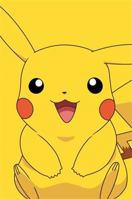

皮卡丘（日语：ピカチュウ，罗马化：Pikachu，粤语旧译：比卡超）是《精灵宝可梦》系列里900这个虚构生物宝可梦中的一种。出现在该系列的各种电子游戏、动画、电影、卡片游戏、漫画、其它产品及标志。皮卡丘是由西田敦子所构思、并由杉森建所完成设计的。皮卡丘的首次登场是在《精灵宝可梦 红·绿》中，由于受到电视动画的影响，皮卡丘成为最为知名的宝可梦，亦是精灵宝可梦系列的象征。
皮卡丘是一只电气鼠，全身的皮毛都是黄色的。它的耳朵很长，尖端是黑色的。它有小小的嘴巴，以及黑色的眼睛。它的脸颊上有两个红色的圆形电气囊。它的前爪短而粗，有五个“手指”，后爪则只有三个。它背上有两条褐色的条纹。尾巴是像锯齿状的闪电，与身体相接的部分也有一片褐色的皮毛。确切地来说皮卡丘是一只老鼠，它跑动的时候是用四条腿着地快速地奔跑，但是更多时候它是站立着的并用两只后脚走路。更多皮卡丘外貌介绍请看这里。
皮卡丘独有的能力是在紧张时通过它脸上的电气袋释放电气。这个电能可用各种方式操纵，常被用在对战中，不过有时它也被皮卡丘用来烤树果。
皮卡丘由于把电能储存在体内，经常需要放电，不论什么目的。否则它可能会被麻痹，甚至死亡。皮卡丘通过尾巴，像避雷针一样安全地释放不需要的能量。烧焦的草丛是皮卡丘居住在这里的标志，这个标志是它释放的电力造成的。如果不能及时释放电力，皮卡丘通常会双颊不断冒出电磁波，并且还会发烧，就像人类的流感一样。这个症状常常是由附近的强电和强磁造成，强电和强磁会影响它的放电的腺体。皮卡丘可学会招式表请看这里。
野生的皮卡丘大多群体行动，很少固定在一个地方。不过，在受到威胁时，一群皮卡丘可以产生强大的攻击性的电流，这覆盖范围极广的电力甚至可以制造非常短暂的、地域性的雷暴。皮卡丘也会变得有害，因为它们有时会吃掉或摧毁电话线、电缆和其他电子产品。更多参考资料请点击此处。